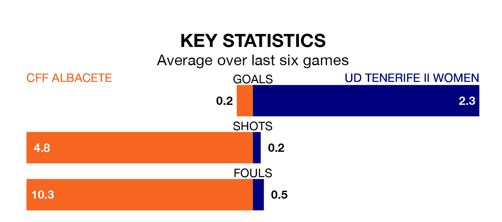

CFF Albacete host UD Tenerife II Women in Sunday's early match looking to bounce back from defeat last time out in the Segunda Federación Femenina.
CFF Albacete, who sit zero in the league after 21 games, fell to a 1-0 away defeat to Málaga Women on February 24.
They face a Tenerife II Women side who picked up a win in their last match, a 1-0 victory against Femarguín Women, and who sit fourth in the table.
With 13 goals in 21 games so far this season, CFF Albacete are the league's-14th-lowest scorers with 0.6 goals per game. And they are conceding more than average, letting in 41 goals at a rate of 2.0 per game.
Tenerife II Women, meanwhile, are above average scorers, with 1.8 goals per game, compared to a league average of 1.3. They have conceded 0.5 goals per game.
The hosts are in bad form in the Segunda Federación Femenina, with one win and five losses from their last six games.
With five wins and a draw over that period, the away team's form is much better – they have taken 16 points from 18, compared to CFF Albacete's three.
Updated: 09:34 (UTC), 08/03/24